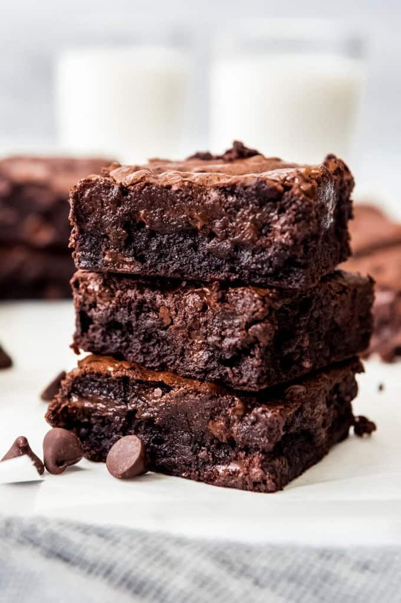

Para preparar los brownies, derrite el chocolate con la mantequilla a baño maría. En un bol aparte, bate los huevos con el azúcar hasta obtener una mezcla cremosa. Añade el chocolate derretido y mezcla bien. Incorpora la harina tamizada, la sal y la esencia de vainilla. Vierte la mezcla en un molde engrasado y hornea a 180°C por 25-30 minutos. ¡Deja enfriar antes de cortar y disfruta!
Para más recetas deliciosas, visita Recetas de Cocina.